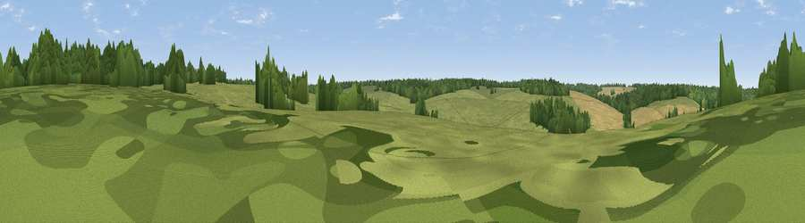

Viewpoint near Horringer
#45162 in England · top 59% of its area beats it · near Horringer · access?Where it is
The exact computed spot (TL 81031 61325). Click the marker for map links.
Public access: no public right of way or access land is recorded at this exact spot — it may be on private land. Computed from Natural England's CRoW access layer and OpenStreetMap rights of way — not the legal definitive map. Always verify locally.
The view, rendered

A 360° render of this exact spot computed from the terrain model, tree cover and land cover — summer colours, afternoon light, calibrated against photographs of famous viewpoints. Real trees, hedges and buildings will differ in detail.
The panorama
Grey silhouette: terrain skyline in each direction (720 bearings, Earth curvature and refraction included). Dashed green: skyline with trees (+15 m) and buildings (+8 m) as obstacles. Blue strip: how far the ground is visible on each bearing.
Where the view opens
Wedge length = distance to the farthest visible ground on that bearing (vegetation-aware). Rings at 10, 25 and 50 km.
What fills the view
49% grassland · 33% woodland · 17% cropland
Angular shares of the visible panorama (visual magnitude), not map area. Landscape diversity 0.44 (0–1 Shannon).
Key numbers
More beautiful places nearby
The staircase of upgrades: each row has a higher view potential than everything closer. Driving times are estimates from straight-line distance, calibrated against real road routing — check an actual route before setting out.
| Place | Direction | Drive | Score |
|---|---|---|---|
| Viewpoint near Horringer | S · 0 km | ~2 min | 17.7 |
| Hundon Hill | SSW · 13 km | ~24 min | 23.8 |
| Viewpoint near Little Cornard | SSE · 24 km | ~39 min | 27.8 |
| Rivey Hill | WSW · 28 km | ~44 min | 37.6 |
| Viewpoint near Linton | WSW · 28 km | ~44 min | 41.0 |
| Cambridge high point | W · 32 km | ~50 min | 43.6 |
| Viewpoint near Stapleford | WSW · 33 km | ~51 min | 52.9 |
| Viewpoint near Royston | WSW · 51 km | ~73 min | 56.6 |
52.22038, 0.64876 · source: osm viewpoint · position refined by local search. Computed location — check access rights before visiting.